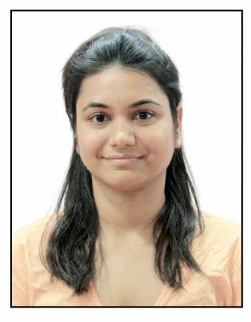

Research Interests
Edge Computing, Computer Vision in Autonomous Vehicles, Modelling of Internet of Vehicles (IoV), Cyber-Physical Systems
Education
- Ph.D. Department of Computer Science & Information Systems, BITS Pilani, 2020–Present
- M.Tech. Department of Computer Science Engineering, Amity University, 2016–2018
- B.Tech. Department of Computer Science, RGPV Bhopal, 2011–2015
Biography
She was a Chanakya Ph.D. Fellow Awardee sponsored by DRISHTI CPS IIT Indore. The CHANAKYA (Comprehensive and Holistic Advancement of National Knowledge Yield and Analytics) Ph.D. Fellow sponsorship by DRISHTI CPS Foundation is an initiative under the National Mission on Interdisciplinary Cyber-Physical Systems (NM-ICPS) by DST Govt. of India. She has now completed her Ph.D. degree in the area of Edge computing, Urban Mobility, Computer Vision in Autonomous Vehicles in Disruptive Technologies Lab in the Department of CSIS, BITS Pilani, Pilani Campus. She has been advised by Prof. Shashank Gupta. Her research interests are majorly in Internet of Vehicles (IoV), Edge computing and embodied intelligence. She is a student member of IEEE, ACM and an affiliate member of DRISHTI CPS, IIT Indore. She is also a review committee member of many journals, transactions and conferences. She has also received an International Travel Support (ITS) Fellowship, ANRF, India for presenting a manuscript in IEEE IV 2024, Jeju Island, South Korea.
Her research particularly piques interest in the AI-driven modelling of Internet of Vehicle (IoV) in the broader domain of Edge Computing (EC) and Computer Vision in Autonomous Vehicles (AV). She is also interested in exploring the interplay between EC and AI to address practical perception challenges in vehicular environment and tackle energy-related concerns within IoV systems. She aims to work for establishing a conducive ecosystem by enhancing and advancing Intelligent Transportation Systems (ITS) with the contribution of Vehicular Networking technologies.
Teaching
Add your teaching list here.
Publications
Add your publication list here (with DOI/IEEE links).
Fellowships / Projects
Add project summaries + roles + outcomes.
Awards
Add awards and recognitions.
Professional Activities
Add reviewing, memberships, committees, etc.